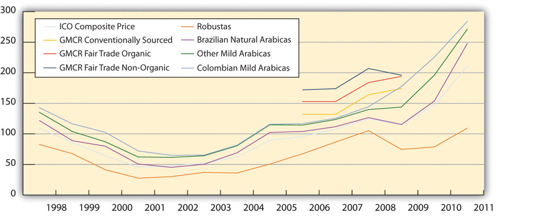

Bob Stiller opened his first coffee shop in 1981 in Waterbury, Vermont, selling high-quality coffee. His concept was simple; sell only high-quality coffee to ordinary people every day. When demand for his coffee outstripped his small store, he started bagging his coffee and sold it to wholesalers, supermarkets, and by mail order. A strong following for his coffee soon developed in New England and in the Northeast. Stiller’s entrepreneurial drive and passion for selling quality coffee eventually became the cornerstone of the company’s purpose and guiding principles, “to create the ultimate coffee experience in every life we touch from tree to cup—transforming the way the world understands business.”John M. Talbot, Grounds for Agreement: The Political Economy of the Coffee Commodity Chain (London: Rowman & Littlefield, 2004). Stiller focused his company’s purpose around supply chain management (SCM)Management of material and information flow in a supply chain to provide the highest degree of customer satisfaction at the lowest possible cost. SCM requires commitment of supply chain partners to work closely to coordinate order generation, order taking, and order fulfillment, creating an “extended enterprise” spreading far beyond the producer’s location..
In 2005, Green Mountain was the first company in the coffee industry to support the United Nation’s Global Reporting Initiative (GRI) mission to develop globally accepted sustainability reporting guidelines. Green Mountain Coffee Roasters’ (GMCR) management adopted the GRI’s guidelines because the company’s senior managers believed that their organization could benefit from sustainability measurement and comparison and GRI’s guidelines served this purpose.
The following year, GMCR published its first corporate social responsibility report. Stiller noted at the time that the report would give employees a better way to understand corporate values and the way the company conducted business. It would also challenge them to do better.TransFair USA, TransFair USA: Almanac 2009, accessed June 8, 2010, http://www.fairtradeusa.org/resource-library/downloads. The report made public for the first time the company’s triple bottom line (TBL)Financial, social, and environmental effects of a firm’s policies and actions that determine its viability as a sustainable organization. goals and progress in meeting them. In 2008, a “social and environmental responsibility” committee was added for the board of directors. The committee is responsible for overseeing the company’s social and environmental responsibilities. In addition, the company established the positions of vice president for corporate social responsibility and vice president for environmental affairs reporting directly to the CEO. And a corporate social responsibility team was established consisting of six individuals focused specifically on supply chain outreach, domestic community outreach, social compliance, environmental management systems, and communication.Kathleen E. McKone-Sweet, “Lessons from a Coffee Supply Chain,” Supply Chain Management Review (2009), accessed May 6, 2010, http://www.accessmylibrary.com/coms2/summary_0286-14185976_ITM.
Green Mountain’s corporate social responsibility programs are organized into six practice areas that span the company’s supply chain and are communicated under the banner of “brewing a better world.” The six practice areas are partnering with supply chain communities, supporting local communities, protecting the environment, building demand for sustainable products, working together for change, and creating a great place to work. The company’s overall corporate governance structure is available at http://www.gmcr.com/investors. In GMCR’s 2011 annual report, Stiller stated, “We are particularly proud that our earnings growth has enabled us to increase the resources we direct to societal and environmental initiatives under our banner of ‘Brewing a Better World.’ In fiscal year 2011, the total resources we allocated to sustainability programs totaled $15.2 million. A key corporate value proposition of GMCR is ongoing support and partnership with the communities in which we operate through volunteerism, philanthropy, and other socially and environmentally responsible initiatives.”“Home Page,” Green Mountain Coffee Roasters, Inc., accessed April 10, 2010, http://www.gmcr.com/Investors/Company-Profile.aspx.
Green Mountain successfully shifted some of the coffee industry away from a focus on price (cost to consumers) to shared value creation providing benefits to the company and consumers in an environmentally and socially sustainable way by stimulating greater demand for Fair Trade Certified coffee. In “Brewing a Better World,” management maintained that “as the economic rewards of Fair Trade Certified™ coffee grew, more smallholder farmers would work towards Fair Trade status. And more people would be lifted out of poverty and hunger. More hectares of land under cultivation would be cultivated with care. And so on in a reinforcing circle. It could work the same in many businesses and industries—maybe all.”Green Mountain Coffee Roasters, Inc., Brewing a Better World: VOICES, accessed May 30, 2010, http://www.gmcr.com/PDF/gmcr_csr_2008.pdf.
In fiscal year 2011, GMCR delivered 95 percent revenue growth with net sales of $2,650,900,000. Approximately 84 percent of those net sales were attributable to the combination of Keurig brewing systems and related accessories and single K-Cup packs. The company sold 5.9 million Keurig brewers in fiscal year 2011. Net sales from K-Cup packs totaled $1,704,000,000 in 2011, up 104 percent, or $869,600,000 from 2010.CSRwire, “Green Mountain Coffee Releases First Corporate Social Responsibility Report,” news release, October 3, 2006, http://www.csrwire.com/press/press_release/13663-Green-Mountain-Coffee-Roasters-Releases-First-Corporate-Social-Responsibility -Report.
Green Mountain’s product concept was fashioned after Gillette’s high-margin razor / razor blade strategyThe word strategy comes from the Greek noun “strategos”—“the art of the general”—and the Greek verb “stratego”—“to plan the destruction of one’s enemies through the effective use of resources.” According to Michael Porter, strategy is not a matter of being better at what you do, it’s a matter of being different at what you do. Strategy identifies those major activities that link a firm’s internal environment to its external environment with the primary goal to achieve organizational purpose by creating value for customers.. Green Mountain sold its retail Keurig brewers at cost or licensed the technology to other roasters to enable high volume sales of its K-Cups. The goal was to place as many brewers as possible into homes, offices, hotels, and supermarkets to boost its Fair Trade Certified (FTC) model through brewer and K-Cup sales growth. Keurig brewers were sold at Bed Bath & Beyond, Macy’s, Target, Kohl’s, Walmart, Sears, and other well-known retailers, giving the company’s fair trade business model greater exposure to a wider base of customers. By 2011, Keurig was the best-selling single-serve coffee maker brand in the United States with just over 71 percent market share.

Source: Flickr, http://www.flickr.com/photos/piratejohnny/4883366419/
Starbucks has been GMCR’s largest rival in the specialty coffee market segment. In an attempt to stall declining retail store sales in the United States, Starbuck’s launched a national campaign for its Pike’s Place Roast coffee at a $1.50 per cup. Blandford saw Green Mountain’s home brewing technology as a very affordable customer alternative to its competitors’ retail store coffee. In contrast to Starbucks’s $3 per cup for a tall latte, at-home K-Cup brewing costs consumers about 50 to 60 cents a cup.Green Mountain Coffee Roasters, Inc., Brewing a Better World: VOICES, accessed May 30, 2010, http://www.gmcr.com/PDF/gmcr_csr_2008.pdf. Green Mountain saw its K-Cup products as a way for consumers to cut cost. Money magazine estimated that it would cost consumers $1,246 annually for a daily latte at Starbucks (Figure 9.2 "Annual Single-Cup Coffee Cost at Selected Roasters (Prices in Cents)").
In 2002, GMCR started selling Newman’s Own Organics coffee in K-Cups. This collaboration gave GMCR access to Costco, BJ’s, and Sam’s Club. Just as important, the collaboration with Newman’s Own Organics allowed GMCR to make Fair Trade Certified organic coffee available to all consumers. After the collaboration was started in 2002, Green Mountain became a leader in the organic coffee category and Newman’s Own Organics became one of the fastest-growing national coffee brands in the United States.
In 2007, GMCR entered into a licensing agreement to sell Caribou Coffee that gave it access to midwestern markets. In 2009, Green Mountain acquired the brand and wholesale business of Tully’s Coffee, a respected specialty coffee roaster with roots in the Pacific Northwest. In 2009, Green Mountain acquired the Timothy’s World Coffee brand and its wholesale coffee business located in Toronto, Canada. This acquisition included Timothy’s World Coffee, Emeril’s, and Kahlúa Original brands. Timothy’s gave Green Mountain entry into international markets for the first time. Timothy’s sold only high-quality Arabica coffee, which was sourced globally. Through its new product development and marketing programs, Green Mountain sought to nationally expand its supermarket and college and university food service accounts. At year-end 2009, Green Mountain had more than 8,500 supermarket and 240 college and university accounts.
GMCR’s Tanzanian Gombe Reserve coffee was the first coffee to receive Jane Goodall’s “Good for All” seal, signifying that GMCR not only promotes better pay for farmers but is committed to protect the environment and the planet’s wildlife. The coffee grown near the boundaries of Tanzania’s Gombe National Park is one of the few places worldwide where coffee farmers and chimpanzees live side-by-side. GMCR’s outreach program provides farmers with an incentive to preserve the forest and a chance at economic stability while giving Green Mountain access to one of the best climates for growing high-quality Arabica coffee.Green Mountain Coffee Roasters, Inc., Brewing a Better World: VOICES, accessed May 30, 2010, http://www.gmcr.com/PDF/gmcr_csr_2008.pdf.
Figure 9.2 Annual Single-Cup Coffee Cost at Selected Roasters (Prices in Cents)
Sources: Green Mountain Coffee Roasters, Inc., Corporate Social Responsibility Report: Brewing a Better World, accessed May 30, 2012, http://www.gmcr.com/csr.aspx; ICO,"Indicator Prices Annual And Monthly Averages: 1998 To 2010," accessed June 6, 2010, http://dev.ico.org/prices/p2.htm.